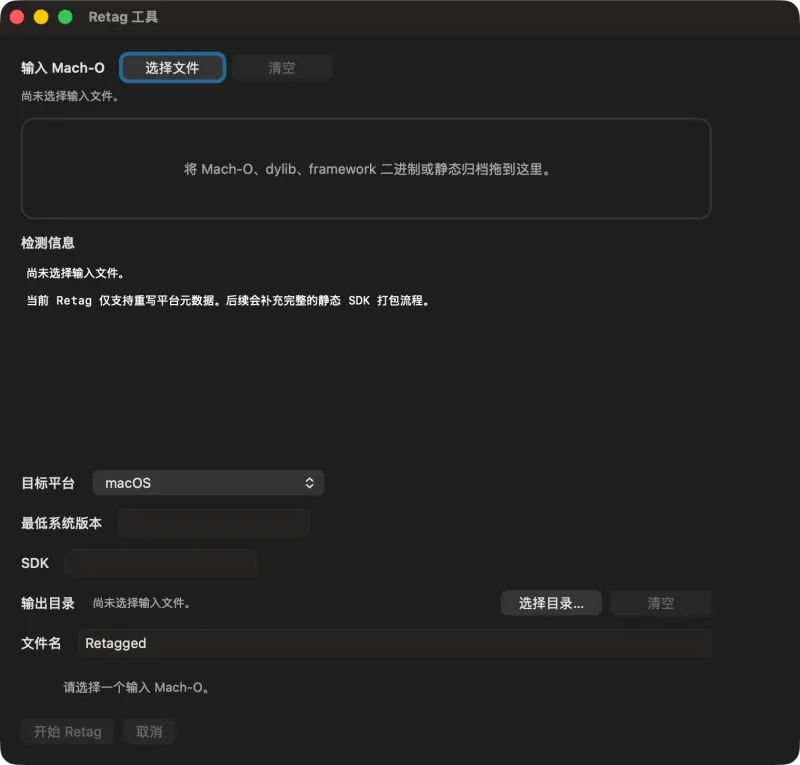
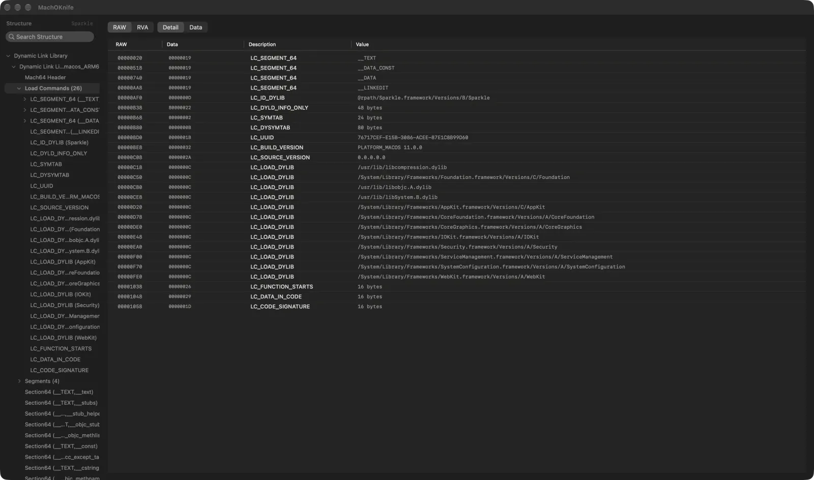
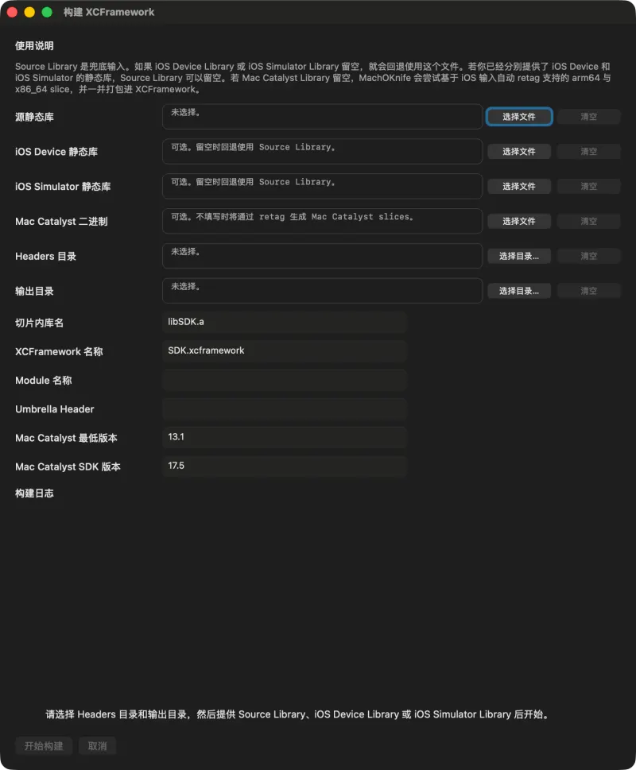
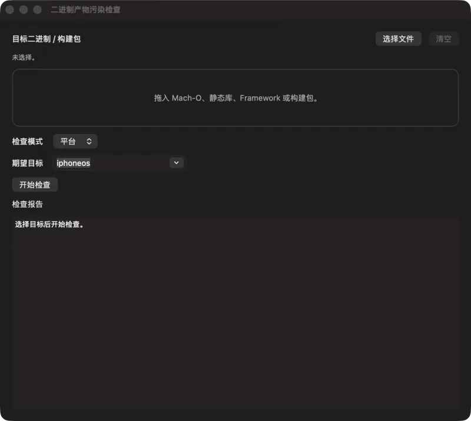

DETAIL Bretag-platform
Retag
改写平台、最低系统版本与 SDK 元数据，例如把 iOS 切片转成 Mac Catalyst 切片。

MachOKnife 是原生 macOS 应用：用 MachOView 式结构树逐字段查看可执行文件、dylib、Framework、通用二进制和静态库，附带 Retag、XCFramework 打包、合并 / 拆分 / 移除架构、污染检查等工具；同一套能力也以命令行 machoe-cli 提供。
左侧结构树，右侧字段级 Detail 表与十六进制 Data 视图，排布方式与 MachOView 一致。

Mach 头、加载命令、段与节、dyld info / chained fixups、导出 trie、符号表 / 间接符号表 / 字符串表、代码签名、Objective-C 元数据与重定位。
单架构与通用（fat）二进制、静态库 .a，以及 dyld shared cache。
两种地址模式随时切换，字段级 Detail 表与十六进制 Data 视图并列。
符号、字符串等重型分组按需解码，打开大型二进制依然流畅。
结构搜索，⌘C 复制选中行，右键菜单复制或导出。
拖放、「文件 › 打开」、访达「打开方式」与「打开最近使用」，最近文件在重启后保留。
每个工具打开时都会自动带入工作区中当前打开的文件。
改写平台、最低系统版本与 SDK 元数据，例如把 iOS 切片转成 Mac Catalyst 切片。

把 iOS 真机 / 模拟器静态库与头文件打包成 XCFramework，可选自动生成 Mac Catalyst 切片。

找出平台或架构与预期不符的切片，比如上架前混进去的模拟器切片。

把多个切片合并为通用文件，按架构拆分 fat 文件，或直接剔除不需要的架构。
为二进制或静态库生成一页式报告，分析在后台进行，大文件也不卡界面。
English、简体中文、繁體中文，在偏好设置中即时切换。
外观可跟随系统、浅色或深色；更新检查可选手动、每天或启动时。
在「偏好设置 › CLI」中把随附的 machoe-cli 安装到你选的目录，也可以卸载。
下面的终端回放是 machoe-cli v1.7.0 对 /bin/ls 副本的真实输出：先查出多余架构，剔除后再复查。
点击上方标签切换场景；终端离开视口时回放自动暂停。
| 命令 | 作用 |
|---|---|
| info | 按切片查看 Mach-O 或静态库元数据，支持 --json |
| summary | 输出简明概览，支持 --json |
| list-dylibs | 列出依赖的 dylib 与 LC_RPATH，支持 --json |
| check-contamination | 检测与目标不符的平台或架构切片，不符时退出码为 1 |
| validate | 校验结构与签名元数据，有问题时退出码为 1 |
| merge · split | 合并多个切片，或按架构拆分 |
| remove-arch | 从通用二进制或 fat 静态库中移除架构 |
| retag-platform | 改写平台、最低系统与 SDK 版本 |
| build-xcframework | 把静态库与头文件打包成 XCFramework |
| set-id · rewrite-rpath | 修改 dylib 的 install name，改写匹配的 LC_RPATH |
| strip-signature | 移除代码签名加载命令 |
| fix-dyld-cache-dylib | 把 dyld cache 风格的 dylib 修正为可正常加载 |
--output 必须与输入不同，remove-arch 需显式加 --in-place 才会原地改写。PATH 上的目录（如 /usr/local/bin）安装，之后运行 machoe-cli help <command> 查看每条命令的全部选项。每个版本按架构分别提供 DMG，体积更小；应用内更新会自动推送与本机匹配的版本。
不确定是哪种？打开左上角苹果菜单 › 「关于本机」：显示「芯片 Apple M…」是 Apple 芯片，显示「处理器 Intel…」是 Intel。
打开 DMG，把 MachOKnife 拖进「应用程序」后启动。安装包经 Developer ID 签名并由 Apple 公证，之后通过 Sparkle 自动更新。